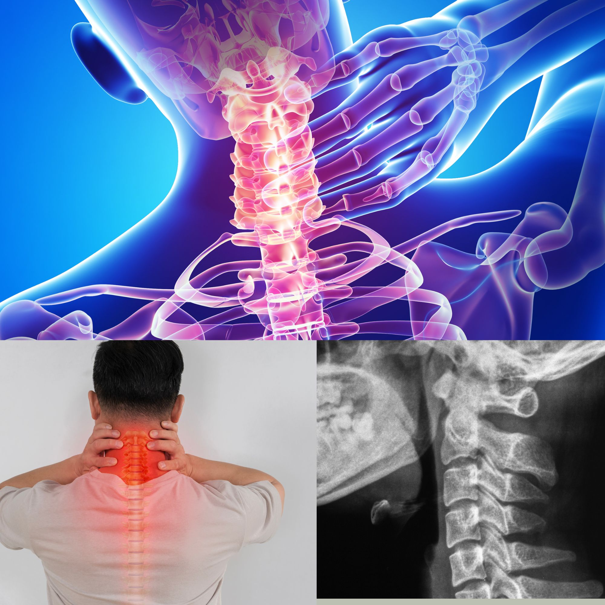

Un cou raide et douloureux ? La cervicalgie expliquée : symptômes, causes et traitement
Vous vous réveillez avec le cou raide ? La douleur descend-elle vers l'épaule, ou s'aggrave-t-elle après une longue journée de bureau ou penché sur votre téléphone ? Peut-être avez-vous mal en tournant la tête pour faire marche arrière en voiture ou vérifier votre angle mort. Il s'agit d'une cervicalgie, le terme médical pour une douleur du cou. C'est l'un des motifs de consultation les plus fréquents. La bonne nouvelle : chez la plupart des gens, elle n'est pas dangereuse et elle s'améliore avec des mesures simples. Cet article explique ce qui se passe, ce que vous pouvez faire, et quels signes d'alerte ne doivent pas vous laisser attendre.
Qu'est-ce que la cervicalgie ?
La cervicalgie signifie simplement douleur du cou. C'est un symptôme et non une maladie unique, un peu comme le rhumatisme. Votre cou, la colonne cervicale, est formé de sept petits os (les vertèbres) empilés les uns sur les autres, amortis par des disques et reliés par de petites articulations, des ligaments et de nombreuses couches de muscles. Il doit porter le poids de votre tête, environ 4 à 5 kg, tout en vous permettant de baisser, tourner et incliner la tête des milliers de fois par jour. Avec autant de travail, il se fatigue facilement.
Que ressent-on ?
- Une douleur sourde, une tension ou une raideur à l'arrière ou sur le côté du cou.
- Une douleur en tournant ou en inclinant la tête, ou l'impression que le cou est « bloqué ».
- Des muscles tendus et sensibles à la base du cou et sur le haut des épaules.
- Des maux de tête qui commencent à l'arrière de la tête et gagnent parfois le front.
- Une douleur qui irradie vers l'épaule, l'omoplate ou le haut du dos.
- Une douleur plus forte après de longues périodes assis, au volant ou la tête penchée en avant, et plus légère après avoir bougé.
Quelles en sont les causes ?
Chez la plupart des gens, on ne trouve pas de cause grave. Les causes habituelles sont :
- Les contractures musculaires et la mauvaise posture : des heures devant un ordinateur, penché sur un téléphone ou une tablette (le « cou du texto »), la couture, ou tout travail effectué la tête penchée en avant.
- Un mauvais sommeil : un oreiller trop haut, trop plat ou trop dur, ou dormir sur le ventre la tête tournée.
- Le stress et la tension : beaucoup de personnes crispent sans s'en rendre compte les muscles du cou et des épaules quand elles sont anxieuses ou fatiguées.
- L'usure (cervicarthrose) : l'arthrose du cou. Les disques et les articulations vieillissent progressivement, ce qui est très fréquent après 40 ans et provoque souvent peu ou pas de symptômes. Voir aussi l'arthrose : un guide pour tous.
- Les problèmes de disque : un disque peut bomber et comprimer un nerf voisin.
- Un traumatisme : coup du lapin après un accident de la route, une chute ou un mouvement brusque.
- Le port de charges lourdes sur la tête ou les épaules, ou les travaux répétés au-dessus de la tête.
- D'autres maladies : la fibromyalgie, les rhumatismes inflammatoires et, rarement, une infection ou une tumeur.
Les problèmes du cou et de l'épaule se chevauchent souvent et l'on peut facilement confondre les deux. Si votre douleur siège surtout à l'épaule, vous pouvez aussi lire nos articles sur la tendinite de la coiffe des rotateurs, la bursite de l'épaule et l'épaule gelée.
Quand la douleur descend : un nerf comprimé (névralgie cervico-brachiale)
Parfois, un disque qui bombe ou une lésion d'arthrose du cou comprime un nerf à sa sortie de la colonne. La douleur ne reste alors pas dans le cou. Vous pouvez ressentir :
- Une douleur vive, brûlante ou comme une décharge électrique qui descend du cou dans le bras, parfois jusqu'à la main.
- Des fourmillements, des « picotements » ou un engourdissement dans le bras ou les doigts.
- Une faiblesse du bras ou de la main, par exemple en laissant tomber des objets.
- Une douleur plus forte quand vous inclinez ou tournez la tête vers le côté douloureux, et parfois un soulagement quand vous posez la main sur la tête.
Les fourmillements dans les mains ne viennent pas toujours du cou. Ils peuvent aussi venir du poignet (syndrome du canal carpien) ou d'une atteinte des nerfs due au diabète. Savoir lequel est en cause est important, car le traitement est différent.
Une cause plus rare mais grave : une moelle épinière comprimée (myélopathie cervicale)
Chez certaines personnes âgées, l'usure peut rétrécir le canal du cou et comprimer la moelle épinière elle-même, et pas seulement un nerf isolé. C'est bien moins fréquent, mais cela compte, car des dégâts permanents sont possibles si on passe à côté. Les signes typiques sont des mains maladroites (difficulté à boutonner, écrire ou tenir un téléphone), un engourdissement des deux mains, une marche instable ou des jambes lourdes, et parfois des troubles du contrôle de la vessie ou des intestins. Ces symptômes nécessitent une évaluation rapide.
Est-ce vraiment seulement le cou ? Comment le diagnostic est posé
Dans la plupart des cas, le diagnostic repose sur votre histoire et un examen : comment la douleur a commencé, ce qui la soulage ou l'aggrave, comment bouge votre cou, et si la force, les réflexes et la sensibilité de vos bras et de vos jambes sont normaux.
- Les radiographies et les examens d'imagerie ne sont en général pas nécessaires pour un premier épisode de douleur du cou sans signe d'alerte. Les signes d'usure, comme sur la radiographie de l'image ci-dessus, sont très fréquents après 40 ans, même chez des personnes sans aucune douleur : l'imagerie montre donc souvent des « anomalies » qui ne sont pas la cause du problème.
- La radiographie peut être utile après un traumatisme, ou pour examiner l'alignement et les articulations du cou.
- L'IRM est réservée aux symptômes nerveux qui ne s'améliorent pas, aux signes de faiblesse, à la suspicion de compression de la moelle ou aux signes d'alerte d'une cause plus grave.
- Les analyses de sang peuvent aider si l'on soupçonne une maladie inflammatoire ou une infection, ou pour rechercher un diabète et d'autres causes de symptômes nerveux.
Que se passe-t-il si on ne la traite pas ?
La plupart des douleurs simples du cou s'améliorent d'elles-mêmes. Mais si la cause n'est jamais corrigée, comme une mauvaise posture, un oreiller inadapté ou de longues heures de sollicitation, la douleur a tendance à revenir. Les épisodes répétés peuvent conduire à une douleur chronique du cou, à des maux de tête fréquents et à une raideur. Un nerf comprimé et négligé peut, chez certaines personnes, laisser un engourdissement ou une faiblesse durables. Une douleur qui ne cède jamais, ou qui s'aggrave, mérite une évaluation complète.
Comment la traite-t-on ?
- Rester actif. Ne vous reposez qu'un jour ou deux au maximum. Les mouvements doux et les activités normales aident à récupérer plus vite que l'immobilité. Porter une minerve ou un collier cervical longtemps n'est pas recommandé, car cela affaiblit les muscles.
- La chaleur. Une compresse chaude ou une douche chaude de 15 à 20 minutes détend les muscles tendus. Une poche de froid peut aider dans les premiers jours après un traumatisme.
- Le soulagement de la douleur. Paracétamol, ou courte cure d'anti-inflammatoires en comprimés ou en gel s'ils vous conviennent. Une courte cure de myorelaxant est parfois prescrite.
- La kinésithérapie. Les étirements, le renforcement des muscles du cou et de l'omoplate et la correction de la posture sont le fondement du traitement, surtout en cas de douleur qui revient ou qui dure des semaines.
- Le traitement de la douleur nerveuse. Si un nerf est comprimé, d'autres médicaments peuvent être ajoutés pour calmer la douleur neuropathique. La plupart des patients s'améliorent sans chirurgie.
- Les infiltrations ou la chirurgie. Seulement rarement, en cas de compression sévère d'un nerf ou de la moelle, ou de douleur qui n'a pas répondu à un traitement bien conduit.
- Le traitement de la cause, par exemple l'amélioration de votre poste de travail et de votre sommeil, la gestion du stress, ou l'équilibre d'un diabète ou d'une maladie inflammatoire.
Combien de temps dure la guérison ?
Une douleur simple d'origine musculaire s'améliore en général en quelques jours à deux ou trois semaines. Une douleur avec un nerf comprimé peut mettre plusieurs semaines à quelques mois à s'apaiser, même si la plupart des patients guérissent bien. En l'absence d'amélioration après quelques semaines, ou si les symptômes s'aggravent, consultez un médecin plutôt que d'attendre.
Les habitudes qui aident
- Placez votre écran à hauteur des yeux, et montez votre téléphone vers votre visage au lieu de pencher la tête vers lui.
- Faites une pause toutes les 30 à 45 minutes : levez-vous, faites rouler vos épaules et tournez doucement la tête d'un côté à l'autre.
- Choisissez un seul oreiller qui soutient bien le cou et le maintient dans l'axe de la colonne. Dormir sur le dos ou sur le côté est plus doux pour le cou que sur le ventre.
- Ne coincez pas le téléphone entre l'oreille et l'épaule.
- Portez les charges de façon équilibrée et près du corps, plutôt que sur une seule épaule ou sur la tête.
- Réglez votre siège de voiture et votre appuie-tête pour que votre tête soit soutenue en conduisant.
- Restez actif et gérez le stress : la marche, la natation et les exercices de relaxation aident à relâcher les tensions du cou.
Quand consulter rapidement
- 🔴 Une douleur du cou après une chute, un accident de la route ou un autre traumatisme important : rendez-vous à l'hôpital et évitez de bouger inutilement le cou.
- 🔴 De la fièvre avec une nuque très raide, des maux de tête intenses, des vomissements, une confusion ou une gêne à la lumière : une méningite doit être écartée en urgence.
- 🔴 Une douleur du cou, de la mâchoire ou du bras avec douleur thoracique, essoufflement ou sueurs : appelez le SAMU (114) ou rendez-vous immédiatement à l'hôpital.
- 🔴 Un mal de tête brutal et intense, différent de tous ceux que vous avez connus.
- 🔴 Une faiblesse ou un engourdissement brutal d'un bras ou d'une jambe, des difficultés à marcher, une perte d'équilibre ou une perte de contrôle de la vessie ou des intestins.
- 🟡 Une douleur du cou qui ne s'est pas améliorée après 2 à 3 semaines, ou qui revient régulièrement.
- 🟡 Des fourmillements, un engourdissement ou une faiblesse du bras ou de la main, ou des mains maladroites.
- 🟡 Une douleur qui vous réveille la nuit et ne diminue pas en changeant de position.
- 🟡 Une perte de poids inexpliquée, une fièvre légère qui dure, ou un antécédent de cancer.
- 🟡 Vous avez une maladie rénale, un ulcère de l'estomac, une maladie cardiaque, de l'hypertension ou vous prenez des anticoagulants, car de nombreux antalgiques peuvent ne pas vous convenir.
L'essentiel à retenir
La cervicalgie est très fréquente et, la plupart du temps, elle n'est pas grave. Continuez à bouger, améliorez votre posture et vos habitudes de sommeil, et utilisez un antalgique simple quand vous en avez besoin. N'ignorez pas une douleur qui descend dans le bras, qui s'accompagne d'engourdissement ou de faiblesse, ou qui suit un traumatisme : ce sont des raisons de se faire examiner. Et si la douleur revient sans cesse, chercher pourquoi, plutôt que de seulement traiter chaque crise, est le meilleur moyen d'y mettre fin.
Si votre douleur du cou dure, perturbe votre sommeil ou limite votre travail, n'attendez pas qu'elle passe toute seule. Consultez toujours votre médecin avant de commencer ou d'arrêter un médicament.
Une douleur du cou qui ne passe pas, ou des fourmillements dans les mains ? Contactez-nous directement.
Écrire sur WhatsAppCet article fournit des informations générales sur la santé et ne remplace pas une consultation médicale. En cas d'urgence médicale, appelez le SAMU (114) ou rendez-vous à l'hôpital le plus proche.